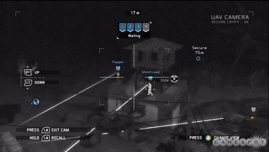
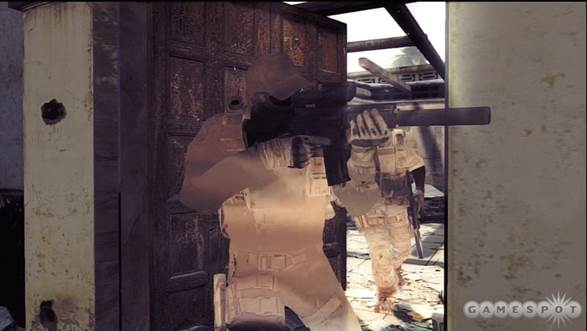
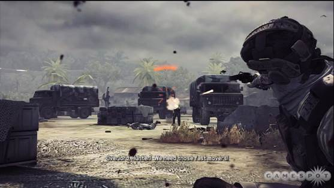
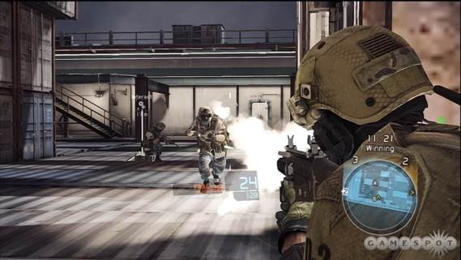

The decades to come may be full of unknown potential for wondrous inventions, but in the gaming realm, the future is old hat. Invisibility, X-ray vision, and miniature floating cameras are modern marvels that have long since become familiar. Though these tools are potent in Tom Clancy's Ghost Recon: Future Soldier, there's precious little novelty in your futuristic arsenal, and this can make you feel like you're undertaking missions you've run many times before. So is Future Soldier just another by-the-book third-person shooter?
Fortunately not. Though there's plenty of familiarity to be found here, Future Soldier's brand of stealthy action and streamlined teamwork gives it a distinct appeal. The lengthy campaign lets you wield your AI allies like autonomous weapons; their guns are yours to command, but they handle their own maneuvers, pushing the action along at a slick pace. Replacing them with your fellow humans brings its own challenges and rewards, as does facing off against said humans in the lively competitive multiplayer modes. Though it's more of a product of the past than a vision of the future, Ghost Recon: Future Soldier is a robust package that provides plenty of satisfying ways to exercise your itchy trigger finger.
In the campaign, you play as the ghosts, a four-man team of elite soldiers. Cutscenes and mid-mission dialogue combine to create a nice sense of camaraderie among the crew, and hackneyed archetypes are downplayed in favor of more understated characterization. Personalities are colored in during small moments, like a song streaming out of earbuds, a fleeting facial expression, and a conversation about used trucks. Interactions with other military personnel reveal how isolated the ghosts are from the soldiers they break bread with and how oblivious those soldiers are to this fact. This segregation creates a connection among the ghosts that is a refreshing change from the familiar "bonds forged on the crucible of combat" trope.

Line 'em up and knock 'em down.
On the field of battle, the ghosts try to emulate their namesakes, moving silently with the aid of slick optical camouflage that dissolves if you jog, sprint, or fire your weapon. Staying stealthy is often a mission requirement, and even when it isn't, avoiding detection gives you a distinct advantage. It's easy to maneuver unseen, and you spend a lot of time silently eliminating foes. Stealth melee kills and suppressed weapons are your basic tools, but the key mechanic is the sync shot. Spotting enemies through your scope or tagging them from aloft with your aerial drone, you can designate up to four targets for you and your squad to eliminate in one fell swoop. To execute, simply open fire on your own target, or issue the command with a press of the right bumper.
It's a neat trick, and the seconds of slo-mo that follow are a welcome flourish that allow you to silently mop up more than the few targeted foes. Using sync shots to eliminate enemies is pleasing and relatively easy, thanks to the array of detection methods at your disposal. Drones, sensor grenades, and a few flavors of optical gadgetry give you plenty of ways to detect nearby foes. As long as no one sees the dead bodies, no one gets suspicious, and many situations lay out foes in discrete, easily sync-shot-able groups.
Only in later levels do you encounter larger groups that put your coordination skills to the test. You must now take into account multiple lines of sight and interlocking movement patterns, as well as calibrate the exact speed at which you can tag and take down a new set of targets. Methodically carving your way through these scenarios is very satisfying, and you might even find yourself choosing to reload checkpoints when you are discovered, even if you aren't forced to. Though an alert doesn't always bring your mission to a close, challenging yourself to maintain stealth is usually more engaging and fun than blasting your way through.

It's important to remember that you are camouflaged, not invisible.
Aside from sync shot orders, your AI allies are mostly autonomous. They follow your lead but move, take cover, and engage alerted targets on their own. They are very reliable, but they are prone to a number of unrealistic behaviors that can hamper your immersion. Shooting effectively through multiple thick walls, sprinting past enemies while maintaining camouflage, or failing to acquire a marked target in line of sight are all intermittent AI oddities.
Fortunately, these AI issues rarely have an adverse effect on your progress. Yet regardless of how careful you are, things are going to get loud. Open firefights provide good opportunities to use non-suppressed weapons like light machine guns and shotguns, as well as deadly ordnance like frag and incendiary grenades. The AI is aggressive, but not reckless (to borrow a phrase from the ghost leader), and they throw grenades, flank, and suppress your position with vigor. The latter action can trigger a disorienting camera movement that temporarily prevents you from returning fire, a nice change from the clouded field of view seen in other shooters.
As long as you stay behind cover, dodge grenades, and shoot sharply, you can progress through these encounters without too much hassle. The suggested weapon loadout is always up to the task, though Future Soldier does offer an extensive weapon customization mode before each campaign mission. Almost every part of the gun can be analyzed and swapped out for another that favors different attributes, though it takes some time to unlock the more intriguing hardware. Each component is rendered in loving detail, and it's fun to watch the gun spring apart into fragments and then reassemble. You do all this tinkering with the controller or with the Kinect, though the latter is strictly a novelty and almost no help at all when it comes to testing your weapon on the firing range.
Out in the field, your guns fire with realistic reports and bullets impact targets with a squishy thud. Yet while the gunplay is competently put together, the cover-to-cover firefights rarely coalesce into something truly exciting. There's a workmanlike quality to the action that makes you yearn for the thrill of a sync shot, though some set-piece moments help liven things up. Slow-motion breaching maneuvers and on-rails hostage extractions add some dramatic flair, and the mission with a donkey-sized robot (the Warhound) provides some explosive kicks.

Your other arm is currently devoted to hostage extraction.
Each campaign mission presents four challenges to overcome in order to unlock extra weaponry, and striving to achieve them is a good way to keep things more interesting. You have to tweak your arsenal to pull some of them off, or just bring a few friends along to help your cause. In fact, some seem to all but require additional human players, and you can have one local or up to three online teammates. Coordinating sync shots and advancing on enemies is more enjoyable with a human crew, and there's also a horde mode in which you (and up to three friends) must defend an outpost from waves of enemies. Escalating weapon loadouts, wave perks, and a variety of gear help you make your stand as things get tougher, and the higher waves pose a stiff challenge to even the sharpest ghosts.
There's also a lively challenge to be found in competitive multiplayer, in which two teams of up to six players can compete in a variety of modes. As in the campaign, you can die quickly if caught out, so cover is a powerful ally. But with the exception of the one-life-per-round Siege mode, respawns happen frequently enough that the penalty for death is not very severe, which allows for more brazen tactics. This gives things a more hectic feel, especially in Conflict mode when the objectives regularly shift the focal point of the battle.

Not on my watch.
Your firearm skills serve you well, but so does reconnaissance. Stunning an enemy instead of killing him and then hacking his data feed may be risky and time-consuming, but the resulting reveal of enemy positions is a very potent reward, especially in the bomb-transporting Saboteur mode. Using your tech to gain an advantage is gratifying, and success in multiplayer earns you levels and new gear for whichever of the three classes you are playing as at the time.
The competitive action evolves as more players bring more gadgetry and guns into the fray, adding some nice diversity, and even the lengthy campaign provides some good reasons to return to it after you've seen it through. Though the standard gunplay isn't very exciting, stealthly skill shots and diverse combat scenarios provide a lot of entertaining and satisfying moments. The action rarely transcends present-day standards, but Ghost Recon: Future Soldier proves that there is still a lot of fun to be found on the battlefields of the future.